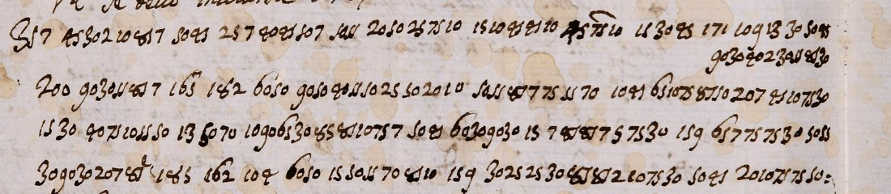

At a glanceKey recovered from the ciphertext alone · partial · 379 of 422 cipher words
- The letters
- Five letters of Vittoria Gonzaga, a nun at Santa Chiara in Naples, to a brother the letters do not name, dated 2 April 1686, 13 April 1688, 4 September, 18 September and 16 October 1691. Each is clear Italian with passages in numbers.
- Where
- Biblioteca Estense Universitaria, Modena, Autografoteca Campori, Lettera G, Gonzaga, Vittoria (Sec. XVII-XVIII), cc. 3-4, 11-12, 22-23, 24-25 and 20-21. The library marks four as partly in cipher; the letter of 18 September 1691 (cc. 24-25) is not so described. No DECODE record. Catalogue item 1570.
- The cipher
- Simple substitution by number with word divisions kept: the alphabet numbered in fives with each neighbouring pair swapped (a 10, b 5, c 20, d 15, e 30, f 25 ...), 7 for o, 2 for u or v, 3 for z, a stroke over a group to double it, and thirteen code groups for words such as che and Duca.
- How it was deciphered
- WAINUT built the key by hand from the numbers of c. 3v and c. 4r (3 November 2026). Matthew Kennedy, with that key in hand, re-transcribed and completed the four letters then known (21 to 23 November 2026). The fifth letter was transcribed and read here on 24 November 2026 with his key, which gave Italian without a change.
- What it says
- The sequestration of San Paolo, a summons for 1,000 ducats, a bishop who wanted to imprison Fra Basilio, and grain: the Duke of Torre Maggiore asks for licences, and in the fifth letter his own cipher sheet, copied out, speaks of loading grain in October and of “questa benedetta peste”.
- Still open
- 43 holes: 30 words in which the writer abbreviated or left out letters, two slips of the pen, one word under a blot, one three-letter word, and nine uses of eight code groups with no value. The fifth letter’s reading has not yet had its second reader.
- Credit
- Key and the decipherment of the passages then transcribed: WAINUT (pull request #226). Completion, the lower half of c. 4r, code values and statistical checks: Matthew Kennedy (pull request #853). Both worked with AI models, as they state.
01 The letters
The five letters sit in one dossier of the Campori autograph collection, which holds eighteen records for Vittoria Gonzaga: two of 1626 from Mantua, fifteen from Naples of 1686 to 1701 and one with no date. Each cipher letter is ordinary Italian handwriting with short runs and blocks of numbers set into it. The letter of 2 April 1686 is written by the two nuns together, by Matthew Kennedy’s reading of it. The brother is not named in the letters; Kennedy’s files call him Vincenzo Gonzaga, which was not checked here.

The letter of 18 September 1691 was found on 24 November 2026, when the twelve records of the dossier that the library does not mark as cipher were looked through: cc. 24v and 25r carry a run of two lines, a block of twelve lines and three lines more. Neither contributor had transcribed it. On the other eleven letters no number passage showed at the reduced size they were viewed at.
02 The cipher
Each letter has a number of one, two or three digits, and the writer leaves a space between words. The alphabet is numbered in fives and then each neighbouring pair is swapped: a 10, b 5, c 20, d 15, e 30, f 25, g 40, h 35, i 50, l 45, m 60, n 55, o 70, p 65, q 80, r 75, s 90, t 85. Three signs are off the pattern: o is mostly written 7, u or v is 2, and z is 3. A 5 for b is sometimes set between dots. A stroke over a group doubles the letter (danno on c. 20r). WAINUT noticed the swapped pairs after he had built the table, which makes them a check on it.
Thirteen code groups stand for whole words. Five now have a value that reads at every place they occur: 104 che (17 uses), 159 per (5), 13 et (3), 182 V.E. (3) and 109 Duca (2). Two have a probable value, 171 Signor and 161 questo; six have none (165, 185, 162, 168, 160, 200). No key sheet of the time is in the dossier.
03 Two solutions
WAINUT, 3 November 2026 (pull request #226), working with AI language-model agents that viewed the images. The table was built by hand from the numbers of cc. 3v and 4r and their word divisions (fidarci di nessuno, Paulo, nulla, sequestro). A blind check by another agent read 57 groups before seeing the table and differed at 5, all settled on zoom in the solver’s favour; annealing with no key recovered 11 of the 18 letter values. His reading covered 198 number words, 172 of them as sense (86.9%). Most pages were transcribed at about 1,400 px, and the lower half of c. 4r was not transcribed.
Matthew Kennedy, 21 to 23 November 2026 (pull request #853), with WAINUT’s key and reading in hand. He transcribed all four letters again on native-size crops, added the lower half of c. 4r, proposed values for the code groups and confirmed 3 = z. A blind anneal on Letter 1 alone, with no crib, agrees with the key on 381 of 397 letter tokens of the other three letters. By his statement he used Gemini 4 for first-pass visual triage, scripting and Italian drafting and checked the glyphs, key and readings against the scans himself. His strict count was 237 of 267 cipher words.
Where they agree. The letter values of the two key files are the same. On the passages both transcribed, 776 of the 808 groups of WAINUT’s transcription stand in Kennedy’s in the same order. They differ at 30 places. At most of them WAINUT’s first transcription at about 1,400 px gives no word and Kennedy’s gives one: stcmo / stamo, seculnorio / secutorio, spaltta / Spagna, banatte / abbatte, couolo / il vescovo lo. At six the choice is between two words, or neither is one: ansia / anima (c. 4r), d’ / 13 and da / di (c. 20r), da / di and l’ho / e ho (c. 21r), del / let (c. 23r). The native-size images, checked on 24 November 2026, give anima, 13 and di on c. 20r, da after carre on c. 21r, and leave the word before ho under a blot and the c. 23r word as det or let.
13 or 15. Between danno and interesse on c. 20r WAINUT printed 15 (d’interesse) and Kennedy 13, a code for et. WAINUT’s own log shows 13 as his first transcription from the native tiles, changed to 15 for the sense. On the image the second digit is a 3 with two open bowls, unlike the 5s beside it. The fifth letter settles what the group is: 13 stands twice more there, in “[et] è il seguente” and “de’ grani, [et] io aspettarò”, so it is a group of the cipher and not a slip for 15, and et reads at all three places.
04 The fifth letter
The letter of 18 September 1691 was transcribed on 24 November 2026 by an AI agent for the maintainers, on native-size regions of the Estense images, in two passes at different cut points. The passes differed at about a dozen places (pensare against penetrare, 162 against 182, a group missed in altro); each was settled on a further enlargement, and every doubtful sign is listed in the notes. The reader knew the key, and one reader made both passes. The transcription has 603 groups and 155 cipher words. Kennedy’s key, applied to it with nothing changed, gives Italian.
After a short run (“non so Monsig[nor]e come la sentirà”), the block opens: “Ho levato il foglio in cifra dalla l[ette]ra del [Signor?] Duca, et è il seguente.” She has taken the cipher sheet out of the Duke’s letter and copies it. The Duke of Torre Maggiore is named in the clear text of the same page. He will wait for October to load the grain when the boats come; then “questa benedetta peste, che tiene in travaglio”: no one knows what it is, while “in queste parte si vive con salute”, and the news from the province of Bari speaks of hunger, of which many die; “in ogni modo il tempo lo scoprirà”. Four weeks later, in the letter of 16 October, the same Duke asks her through Pompeo for licences for 50 cartloads of grain.
The new context tests the code groups that were open. 159 per stands three more times, twice before an infinitive (per porre, per effettuare, sarà per favorirmi); 13 et twice; 182 V.E. twice, a person each time (“sento ... V.E. mi significa”, “dire a V.E.”); 109 Duca once, for the same Duke. Each reads at every place in the five letters, so the four are graded sure; 182 is the closest call, since V.S. would also fit its two new places. This closes five holes in the letters of 1688 and 16 October 1691. Eight groups are new: 171 (probably Signor, before Duca), 161 twice (probably questo), and 165, 185, 162, 168, 160 and 200 once each, with no value.
Holes in the fifth letter: seven words the writer abbreviated or ended with a bare 3 (Monsig[nor]e, l[ette]ra, esec[u]t[ion]e, carricam[ent]o, dic[e], negot[i]o, rovin[a]to); two words where a clearly written group gives no word, ricausranno (read [?ricavaranno]) and bcri (B[a]ri), both one digit from the sense but with a key rebuilt here, so they stay holes; and the nine code uses. 137 of 155 cipher words are sure (88.4%). The reading has not yet been checked by a second reader; its author does not grade it.
05 The readings
2 April 1686 (cc. 3v-4r, 155 cipher words, 141 sure). Don Paolo Ruffo means to lift the sequestration of San Paolo and the nuns fear a sale; the Marquis of Casale Nuovo seeks a writ in the Vicaria; the only remedy is a safeguard from Spain, and at the Collaterale “fidarci di nessuno”. Then praise of a young gentleman from Rome who has no crust of bread assigned to him.
13 April 1688 (c. 11r, 15 cipher words, 12 sure). A summons from Don Paolo Ruffo for the 1,000 ducats of Bisceglia with interest.
4 September 1691 (cc. 22r-23r, 24 cipher words, 19 sure). The bishop wanted to imprison Fra Basilio; life with the bishop is hard; a bridge that troubles her; a man wholly the creature of the lieutenant of the Camera.
18 September 1691 (cc. 24v-25r, 155 cipher words, 137 sure). The Duke of Torre Maggiore’s sheet on grain and the plague, above.
16 October 1691 (cc. 20r and 21r, 73 cipher words, 70 sure). The shipment was not to be disturbed; the Duke of Torre Maggiore asked through Pompeo for licences for 50 cartloads of grain, and she answered that the Camera kept them “in porte di ferro” for the State of Milan; she suspects he needs money.
The four earlier readings are Matthew Kennedy’s, read as sentences against their English for the maintainers on 24 November 2026 (grade B each). The full transcriptions, decryptions, readings and translations are below.
06 What was counted
Only sure words count as read (README Conventions): a word with a letter supplied or changed, a probable word and a code group with no sure value are holes. The count, made with the folder’s scripts/count_words.py over the transcription and reading files of all five letters, is 379 of 422 cipher words, 43 holes, 89.8%. By letter: 141 of 155, 12 of 15, 19 of 24, 70 of 73 (95.9%, the only letter over the bar) and 137 of 155. Before the fifth letter the four letters stood at 237 of 267 (88.8%). The clear text is not counted.
07 What remains uncertain
- 30 words with letters the writer did not write, all grade I: abbreviations (Vic[ari]a, p[ad]re, citat[ion]e, d[ucat]i, inter[ess]i, ten[en]te, Cam[er]a twice, precet[t]i, cerim[oni]e, Monsig[nor]e, l[ette]ra, esec[u]t[ion]e, carricam[ent]o, negot[i]o, rovin[a]to), the five word-final 3 read as e, and words with a letter left out or written twice (no[n], tenut[o], svegl[i]ati, remedi[o], a repeated di, figli[o], an[n]i, s[i], vesco[vo]). svegl[i]ati on c. 3v was checked on the image: the ink has no 50.
- Two slips in the fifth letter, grade M: ricausranno and bcri, a clear 90 and a clear 20 where 10 is wanted.
- One word under a blot before ho on c. 21r (e, l’ or t’), and one three-letter word on c. 23r, det or let ([?lettere]).
- Eight code groups, nine uses, grade I where a value is proposed: 171 Signor and 161 questo (probable), 165, 185, 162, 168, 160 and 200 (none). Each stands once in the five letters (161 twice in one) and no key sheet is known.
- The four sure code values rest on context at several places, not on a key of the time. Two clear-text words are doubtful (Galioto or Galeota on c. 4r, Banchi on c. 21r), and the clear abbreviation q.ste at the foot of c. 24v is unresolved; none is counted.
- No human palaeographer has checked any transcription. The fifth letter was deciphered by the same agent that transcribed it.
08 Sources
- Biblioteca Estense Universitaria, Modena, Autografoteca Campori, Lettera G, Gonzaga, Vittoria (Sec. XVII-XVIII), records on the Lodovico Media Library: cc. 3-4, 2 April 1686, cc. 11-12, 13 April 1688, cc. 22-23, 4 September 1691, cc. 24-25, 18 September 1691, cc. 20-21, 16 October 1691. Images CC BY-NC-SA, via the Estense Digital Library (IIIF).
- WAINUT, key, transcription and reading of the number passages, 3 November 2026, pull request #226 (
key.tsv,transcription_numbers.txt,reading_numbers.md). - Matthew Kennedy, completion of the four letters, 21-23 November 2026, pull request #853 (
kennedy_2026/:key_kennedy.tsv, the per-letter files,verify_vittoria_gonzaga.py). - The fifth letter, 24 November 2026:
transcription_cc24v-25r.txt,decryption_cc24v-25r.txt,reading_cc24v-25r.md,translation_cc24v-25r.md; the code grades with their places inkey_additions_2026-11-24.tsv. - No edition of the letters was found (the vetting of 29 October 2026, a web search of 3 November 2026, and Matthew Kennedy’s search).
The notes, the keys, the transcriptions, the readings, the translations and the counting script are in targets/vittoria1686.